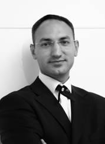

 Hakan Turgut, Parasal Zekâ ve Eğitim Oyunları isimli kitapların yazarı, yönetim danışmanı ve girişimcidir. Lisansını Marmara Üniversitesi İşletme (ing.) bölümünde tamamladı. Yüksek lisansına Marmara Üniversitesi Bankacılık ve Sigortacılık Enstitüsü’nde devam etti. 2003 yılında Melih Arat ile birlikte İmpetus Eğitim Danışmanlık’ı kurmadan önce Finansbank, Colgate Palmolive, Pfizer İlaçları, İnoksan Endüstriyel Mutfak ve AIG Hayat Sigorta gibi çok uluslu firmalarda görev yaptı. 1997 yılından beri tekstil makineleri sektöründe faaliyet gösteren Bulgaristan merkezli bir firmanın ortağıdır. Türkiye’nin ilk Amerikan Tavşan Üreticileri Birliği ve Profesyonel Et Tavşanı Yetiştiricileri Derneği üyesi olan Adapazarı Tavşan Çiftliği’nin de kurucusudur.
Türkiye Zekâ Oyunları Kulübü’nün aktif üyesiyken 1998’de Dünya Beyin Olimpiyatları Şampiyonası’nda başkan yardımcısı olarak görev aldı ve Genç Türk Beyin Takımı kaptanlığını yaptı. 1999’da Marmara Üniversitesi İşletme bölümü tarafından seçilerek Türkiye’yi temsilen Milano/İtalya’da "Global Sorunlara Yerel Çözümler" konulu programa katıldı. Hakan Turgut’un projeleri ve makaleleri 2001 yılında Ortadoğu Teknik Üniversitesi, 2002 yılında Bilkent Üniversitesi ve Dış Ticaret Müsteşarlığı’nda sunuldu.
Samanyolu TV’de "Yaşama Sanatı" isimli programın yapım ekibinde görev alan Hakan Turgut, Radyo Spor’da "İş, Yaşam ve Spor" isimli programı hazırlayıp sundu. Çeşitli internet sitelerinde, gazete ve dergilerde işletme yönetimi konusunda köşe yazıları yayımlanmaktadır. Değişik danışmanlık şirketleri ile işbirliği halinde danışmanlık ve seminer hizmetleri de veren Hakan Turgut, evli ve İstanbul’da yaşıyor. En sevdiği hobisi deniz kanosu yapmaktadır.